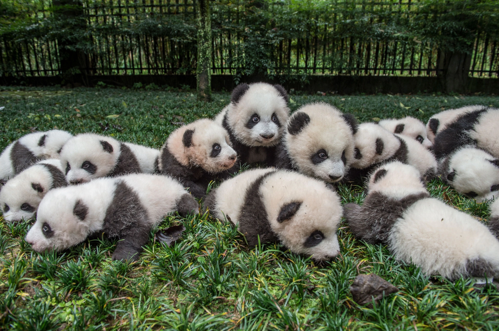
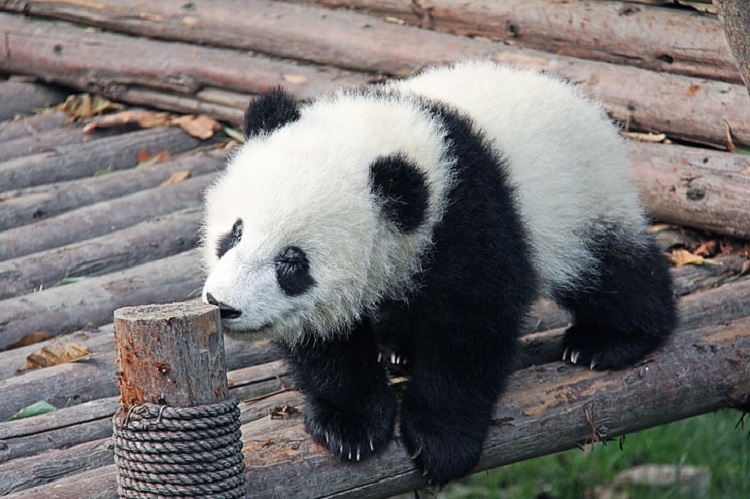
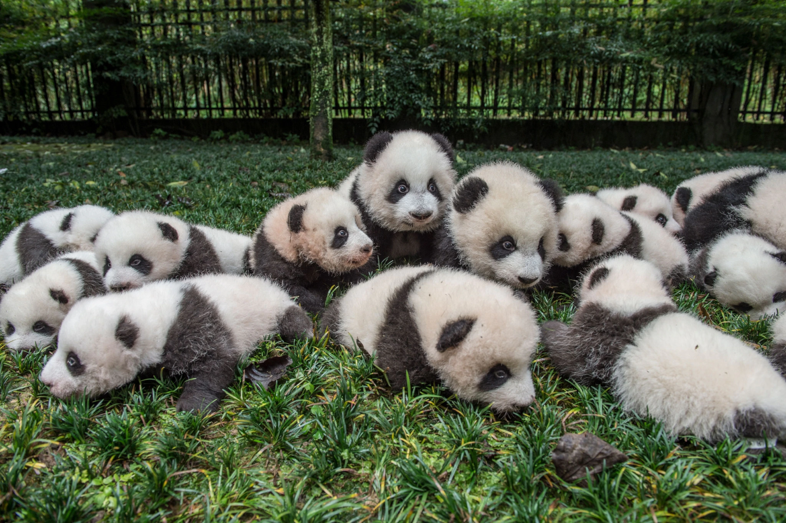
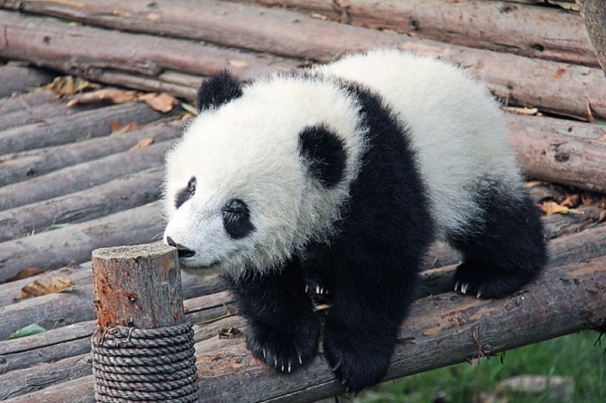

Panda Info
Common Name: Giant Panda
Scientific Name: Ailuropoda melanoleuca
Type: Mammal
Diet: Omnivore
Average lifespan in the wild: 20 years
Adult Size: 4 to 5 ft (1.2 to 1.5 m)
Adult Weight: 220 to 250 lbs (100 to 115 kg)
Habitat: Temperate broadleaf and mixed forests of southwest China
Status: Vunerable (was announced that they were no longer endagered as of 2021)
Panda Details
High in dense bamboo forests in the misty, rainy mountains of southwestern China lives one of the world's rarest mammals: the giant panda, also called the panda. Only about 1,500 of these black-and-white bears survive in the wild. Pandas eat almost nothing but bamboo shoots and leaves. Occasionally they eat other vegetation, fish, or small mammals, but bamboo accounts for 99 percent of their diets. Pandas eat fast, they eat a lot, and they spend about 12 hours a day doing it. The reason: They digest only about a fifth of what they eat. Overall, bamboo is not very nutritious. They must eat around 26 to 84 pounds of it every day, depending on what part of the bamboo they are eating. To stay healthy, they have to eat a lot—up to 15 percent of their body weight in 12 hours—so they eat fast.
Pandas' molars are very broad and flat. The shape of the teeth helps the animals crush the bamboo shoots, leaves, and stems that they eat. They can chomp on bamboo up to one-and-a-half inches thick. To get the bamboo to their mouths, they hold the stems with their front paws, which have enlarged wrist bones that act as thumbs for gripping. A panda should have at least two bamboo species where it lives, or it will starve. A scarcity in bamboo threatens the already limited panda population.
Source:
Panda Facts
- Pandas can climb as high as 13,000 feet and are also very good swimmers.
- An adult female panda weighs 200 pounds.
- Sometimes male pandas relax by doing handstands against trees.
- Giant pandas are born with their eyes closed and don't fully open them until they're about eight weeks old.
- Pandas are shy; they don't venture into areas where people live. This restricts pandas to very limited areas.
- Their eyes are different to normal bears. Like domestic cats, giant panda bears have vertical slits for pupils.
- Pandas have excellent camouflage for their habitat The giant panda's distinct black-and-white markings have two functions: camouflage and communication. Most of the panda - its face, neck, belly, rump - is white to help it hide in snowy habitats. The arms and legs are black, helping it to hide in shade.
- Mother pandas keep contact with their cub nearly 100% of the time during their first month - with the cub resting on her front and remaining covered by her paw, arm or head.
- Giant pandas are good swimmers and excellent tree climbers. At 5 months old, giant panda cubs learn how to climb - sometimes practising by climbing on their mum.
- Newborn giant pandas are small when they're born, but they gain weight quickly by drinking their mother's milk up to 14 times a day.
Source: